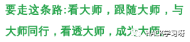

起点：如何成为一名黑客？
文章作者：JobsLong（http://suip.cc/u/JobsLong）
文章地址：http://www.catb.org/esr/faqs/hacker-howto.html
说明： 这篇文章是对 ESR 的经典文章 How to become a hacker ? 的最新修订翻译，参照了一些国内的翻译版本，某种意义上来讲，这不仅仅是一篇黑客入门的读物，也是很不错的编程入门指导。
黑客字典 中对“黑客”一词给出了很多定义，大部分定义都涉及高超的编程技术，解决问题和克服限制的乐趣。如果你想知道如何成为一名黑客，只有两方面是非常重要的：态度和技术。
长久以来，存在一个专家级程序员和网络高手的共享文化社群，其历史可以追溯到几十年前第一台分时共享的小型机和最早的 ARPAnet 实验时期。 这个社群文化的成员创造了“Hacker/黑客”这个术语。 黑客们建起了 Internet，使 Unix 操作系统 成为今天这个样子。黑客们让 WWW(万维网) 正常运转。如果你是这个文化的一部分，如果你已经为它作了些贡献，而且圈内的其他人也知道你是谁并称你为一个黑客，那么你就是一名黑客。
黑客精神并不仅仅局限于软件黑客文化圈中。有很多人同样以黑客态度对待其它事情如电子和音乐，事实上，你可以在任何较高级别的科学和艺术中发现它。软件黑客们识别出这些在其他领域同类并把他们也称作黑客。
有人宣称黑客实际上是独立于他们工作领域的。 但在本文中，我们将注意力集中在软件黑客的技术和态度，以及发明了“黑客”一词的共享文化传统。
另外还有一群人，他们大声嚷嚷着自己是黑客，实际上他们却不是。他们是一些蓄意破坏计算机和电话系统的人（多数是青春期的少年）。真正的黑客把这些人叫做“Cracker/骇客”，并不屑与之为伍。多数真正的黑客认为骇客们是些不负责任的懒家伙，还没什么大本事。专门以破坏别人安全为目的的行为并不能使你成为一名黑客， 正如拿根铁丝能打开汽车并不能使你成为一个汽车工程师。不幸的是，很多记者和作家往往错把“骇客”当成黑客；这种做法会激怒真正的黑客。
根本的区别是：黑客们创造，骇客们破坏。
如果你想成为一名黑客，继续读下去。如果你想成为一名骇客。去读 alt.2600 新闻组[译者：一个关于网络安全的新闻组]，并且在发现你并不是你想的那么聪明的时候去蹲 5-10 次监狱。关于骇客，我只想说这么多。
黑客们解决问题、创造事物，信仰自由以及互相帮助。要想被认为是一名黑客，你的行为必须表现出已经具有了这种态度。但是要想做的好像具备这种态度，你就不得不真的拥有这种态度。
但是如果想通过培养这种黑客态度在黑客文化中得到认可，那么你就大错特错了。成为具备这种态度的人对你来说非常重要--有助于你的学习，并给你提供源源不断的动力。同所有创造性艺术一样，成为大师最高效的方式就是模仿大师的精神--不是仅从理智上，更要从感情上进行模仿。
或者就像这首现代禅意诗描述的：
To follow the path: look to the master, follow the master, walk with the master, see through the master, become the master.

可以参考这篇乌云猪猪侠的学习路线：猪猪侠的黑客学习路线
所以，如果你想成为一名黑客，重复以下事情直到你相信他们：
1. 这个世界充满了待解决的迷人问题
做一个黑客有很多乐趣，但是需要颇费气力才能获得这些乐趣。这些动力需要动机。卓越的运动员从强健体魄、挑战自我身体极限中汲取动力。类似的，作为黑客，你必须从解决问题、磨练技术、锻炼智力中获得基本的快感。
如果你不是这样的人又想做黑客，你就要设法成为这样的人。否则，你会你发现你的黑客热情会被其他诱惑无情的吞噬：性、金钱、社会上的虚名等等。
(同样的你也必须对自己的学习能力建立信心 -- 你要相信尽管你现在所知甚少，但是随如果你一点一点的学习、试探、实践，你最会掌握它。)
2. 一个问题都不应该被解决两次
创造性的大脑是宝贵的、有限的资源。在这个世界上还存在着如此多的迷人的、有趣的问题的时候，它们不应该被浪费去重复发明轮子。
作为一个黑客，你必须相信其他黑客的时间是宝贵的 -- 因此共享信息，解决问题并发布结果给其他黑客几乎是一种道义，这样其他人就可以去解决新问题而不是重复地对付旧问题。
需要注意的是，一个问题不应该被解决两次 并不意味着已存在的解决方案是真理，或者是唯一的正确解决方案。通常，在发现一个解决方案之前，我们需要会学习大量和问题相关的知识。如果这个解决方案没问题，通常来讲，也需要来决策一下能不能做的更好。解决方案也有可能存在人为的技术障碍、法律或者机构保护的障碍（比如闭源软件）阻止人们去重用，强制人们去重新发明轮子。
(你不必认为你一定要把你的发明创造公布出去，但这样做的黑客是赢得大家尊敬最多的人。卖些钱来给自己养家糊口，买房买车买计算机甚至发大财和黑客价值也是相容的，只要你别忘记你的忠诚，你的创造性艺术，你的黑客朋友们正在做的事情。)
3. 无趣和乏味的工作是犯罪
黑客们（以及具有创造力的人们）从来不会被愚蠢的重复性工作所困扰，因为当这种事情发生的时候就意味着他们没有在做只有他们能做的事情 -- 解决新问题。这样的浪费对每一个人都是伤害。因此，无趣和乏味的工作不仅仅是不舒服而已，而是极大的犯罪。作为黑客，你必须完全相信这一点并 尽可能把乏味的工作自动化，不仅仅是为了自己，也为了其他人（特别是其他黑客们）。
(对此有个明显的例外，就是黑客们有时会重复性的枯燥工作来进行脑力休息，或者是为了获的一些技巧以及除此之外无法获得的经验。但是这是他/她自己的选择 -- 有脑子的人不应该被迫做无聊的活儿。)
4. 追求自由
黑客是天生的反权威主义者。任何能向你发命令的人会迫使你停止解决令你着迷的问题，同时，按照权威的一般思路，他通常会给出一些极其愚昧的理由。因此，不论何时何地，任何权威，只要他压迫你或其他黑客，就要和他斗到底。
(这并非说任何权力都不必要。儿童需要监护，罪犯也要被看管起来。 如果服从命令得到某种东西比起其他方式得到它更节约时间，黑客会同意接受某种形式的权威。但这是一个有限的、特意的交易；权力想要的那种个人服从不是你的给予，而是无条件的服从。)
权力喜爱审查和保密。他们不信任自愿的合作和信息共享---他们只喜欢由他们控制的合作。因此，要想做的象个黑客，你得对审查、保密，以及使用武力或欺骗去压迫人们的做法有一种本能的反感和敌意。
5. 态度不能代替能力
要做一名黑客，你必须培养起这些态度。但只具备这些态度并不能使你成为一名黑客，就象这并不能使你成为一个运动健将和摇滚明星一样。成为一名黑客需要花费智力，实践，奉献和辛苦。
因此，你必须学会不相信态度，并尊重各种各样的能力。黑客们不会为那些故意装模做样的人浪费时间，但他们却非常尊重能力---尤其是做黑客的能力，不过任何能力总归是好的。具备很少人才能掌握的技术方面的能力尤其为好，而具备那些涉及脑力、技巧和聚精会神的能力为最好。
如果你推崇能力，你会享受能力提升带来的乐趣 -- 辛苦的工作和奉献会成为一种高度娱乐而非乏味。要想成为一名黑客，这一点很重要。
黑客精神固然至关重要，但是技术更加重要。态度无法替代技术。在被其他黑客成为黑客之前，有一些基本的技术你必须掌握。
这套基本技术随着新技术的出现和老技术的过时也随时间在缓慢改变。例如，过去包括使用机器码编程，而知道最近才包括了 HTML 语言。但现在明显包括以下技术：
1. 学习如何编程
这当然是最基本的黑客技术。如果你还不会任何计算机语言，我建议你从 Python 开始。它设计清晰，文档齐全，对初学者很合适。尽管是一门很好的初级语言，它不仅仅只是个玩具。它非常强大，灵活，也适合做大型项目。我写了一篇详细的文章去 评估 Python。在 Python 网站上也有不错的 教程, 在 Computer Science Circles上还有很多不错的文章。
我过去常常推荐将 Java 作为早期学习的一门语言。但是这篇 评论 改变了我的想法（搜索 “The Pitfalls of Java as a First Programming Language”, 点进去读一下相关的信息）。作为黑客，不会接受解决问题仅仅像五金店里面的管道工一样[译者：只是把一大堆硬件组装起来]，你必须知道每个组件是如何运作的。现在我认为最好的方式是先学习 C 和 LISP，然后再学习 Java 。
也许这里有个一般性的问题。如果一门语言为你做了太多，它可能对开发是一个称手的工具同时却很难去学习。不仅仅是语言存在这个问题，Web 应用程序框架，比如 RubyOnRails, CakePHP, Dingo 或许使你很容易到达一个浅显的认识，但是当你碰到一个难题而没有这些框架资源支持的时候你就会束手无策，甚至只是去调试一个简单问题的解决方案。
如果你要做一些重要的编程工作，你就必须要学会 C，Unix 的核心语言。C++ 和 C 有很密切的关系，如果你知道其中一个，学习另外一个不用耗费太多精力。无论哪一个语言你都可以先尝试开始学习一下，但是，实际上，尽量避免直接用 C 编程你会更加具有生产力。
C 非常高效，很节省你的机器资源。不幸的是，C 需要你手动做大量的低层次的内存管理来获得高效。低级编码非常复杂、容易出错，会花费你大量的时间在调试程序上面。由于今天的机器性能非常强大，还这样做的话通常来讲是一个糟糕的决定 -- 更加明智的是去使用一门机器时间低效的的语言，但是你的时间更有效。所以，Python。
其他对黑客而言比较重要的语言包括 Perl和 LISP。 Perl 很实用，值得一学；它被广泛用于活动网页和系统管理，因此即便你从不用 Perl 写程序，至少也应该能读懂它。对于许多使用 Perl 的人，我建议学习使用 Python，尽量去避免在那些不需要 C 的机器效率的工作中使用 C 语言编程，你只需要能够读懂那些代码就可以。
LISP 值得学习是因为当你最终掌握了它你会得到丰富的经验；这些经验使你在以后的日子里成为一个更好的程序员，即使你实际上可能很少使用 LISP 本身。（你可以通过使用 Emacs 编辑器来获得 LISP 经验，或者 GIMP 的 Script-Fu 插件。）
当然，实际上你最好五种都会。 (Python, C/C++, Java, Perl, and LISP). 除了是最重要的编程语言，它们还代表了非常不同的编程方法，每种都会让你受益非浅。
但是你需要意识到仅仅去学会几种语言是不会达到黑客需要的技术水平，甚至也不能成为一个程序员 -- 你需要站在一般性的角度思考编程问题，独立于任何编程语言。要想成为一个真正的黑客，你要达到的标准时可以通过相关的手册和你已经知道的知识在数天内学习一门新语言。这意味你会学习到几种非常不同的语言。
这里我无法完整地教会你如何编程---这是个复杂的活儿。但我可以告诉你，书本和课程也无济于事。几乎所有最好的黑客都是自学成材的。真正能起作用的就是去亲自 读代码 和 写代码。
彼得•诺维格，谷歌的顶尖黑客,也是现在被广泛使用的人工智能领域的教科书的共同作者，写了一篇棒极了的文章 Teach Yourself Programming in Ten Years。他的成功编程秘诀值得关注。
学习如何编程就象学习用自然语言写作一样。最好的做法是读一些大师的名著，试着自己写点东西，再读些，再写点，又读些，又写点....如此往复，直到你达到自己在范文中看到的简洁和力量。
在如何学习编程中，我已经说了很多次这个学习过程。只是一个很简单的教导，但却是最难的事情。
过去找到好的代码去读是困难的，因为很少有大型程序的可用源代码能让新手练手。这种状况已经得到了很大的改善；现在有很多可用的开放源码软件，编程工具和操作系统（全都有黑客写成）。这使我们自然地来到第二个话题。
2. 获取一个开放源码的 Unix 并学会使用、运行它
我假设你已经拥有了一台个人计算机或者有一个可用的（ 今天的孩子们真幸福 :-) ）。新手们最基本的一步就是得到一份 Linux 或 BSD-Unix，安装在个人计算机上，并运行它。
当然，这世界上除了Unix还有其他操作系统。但它们都是以二进制形式发送的 -- 你无法读到它的源码，更不可能修改它。尝试在 DOS 或 Windows 的机器上学习黑客技术，就象是在腿上绑了铁块去学跳舞。
使用 Mac OS X 当然也可以，但是只用一部分系统式开放源代码的 -- 你可能会遇到很多限制，而且还必须小心不要养成只开发苹果专用代码的坏习惯。如果你集中精力在外壳之下的 Unix，你会学到一些有用的东西。
除此之外，Unix 还是 Internet 的操作系统。你可以不知道 Unix 而学会用 Internet，但不懂它你就无法成为一名 Internet 黑客。因为这个原因，今天的黑客文化在很大程度上是以 Unix 为中心的。（这点并不总是真的，一些很早的黑客对此很不高兴，但 Unix 和 Internet 之间的共生关系已是如此之强，甚至连微软也无可奈何) 。
所以，装一个 Unix -- 我个人喜欢 Linux，不过也有其他选择。（你也可以在同一台机器上同时运行 DOS, Windows 和 Linux）学会它。运行它。用它跟 Internet 对话。读它的代码。试着去修改他。你会得到比微软操作系统上好的多的编程工具（包括 C, Lisp, Python, and Perl），你会得到乐趣，并将学到比你想象的更多知识。
了解更多 Unix 的知识，可以查看 Loginataka。你或许还想看一下这本书 《Unix 编程艺术》
Let's Go Larval! 博客是一个 Linux 新手的学习记录，我觉得写的很清晰明了，对其他人也很有帮助。How I Learned Linux 是学习 Linux 一个不错的起点。
如何获得一个 Linux， 查看 Linux Online 站点，你可以从这个站点下载，也可以寻找一个本地的 Linux 用户组来帮助你安装。
在这篇教程文章头十年的时光里，我从一个初学者的角度来看，所有的 Linux 发行版几乎是相同的。但是在 2006-2007，一个更好的选择出现了， Ubuntu。 当然，其他的 Linux 发行版有自己领域的优势， Ubuntu 遥遥领先的是对新手用户的易用性。需要注意的是，Ubuntu 在几年后推出的默认界面 Unity 比较丑陋和不可重用，Xubuntu 或者 Kubuntu 变体或许比较好。
你可以再 www.bsd.org 找到 BSD Unix 的帮助信息和资源；
还有一种试水的方式是启动使用 Linux 爱好者所说的 LiveCD，他从 CD 可以运行一个 Linux 发行版，而不用担心去更改硬盘布局。这将会运行比较缓慢，因为 CD 非常缓慢，但是这是一种可以快速看一下内容而不会造成任何问题。
我已经写了一些关于 Unix 和 Internet 的 启蒙内容。
我常推荐新手独立安装 Linux 或者 BSD 系统。现在的安装程序已经足够好，你可以完全自己动手搞定，即使是新手。尽管如此，特推荐你咨询或者搜索本地的 Linux 用户组去寻求帮助，这不会有任何损失，安装过程也会更顺利。
3. 学习如何使用互联网以及写 HTML 语言
大多黑客文化建造的东西都在你看不见的地方发挥着作用，帮助工厂、办公室和大学正常运转，表面上很难看到它对他人的生活的影响。Web 是一个大大的例外。即便政客也同意，这个巨大而耀眼的黑客玩具正在改变整个世界。单是这个原因（还有许多其它的）， 你就需要学习如何掌握 Web。
这并不是仅仅意味着如何使用浏览器（谁都会），而是要学会如何写 HTML，Web 的标记语言。如果你不会编程，写HTML会教你一些有助于学习的思考习惯。因此，先建起自己的主页。
但仅仅建一个主页也不能使你成为一名黑客。 Web里充满了各种网页。多数是无意义的，零信息量垃圾 -- 非常炫酷的垃圾，请注意，垃圾都是一样的。（更多可以查看 HTML Hell）
要想有价值，你的网页必须有内容 -- 必须有趣或对其它黑客有用。这样，我们来到下一个话题...
4. 你过你还不熟悉实用英语，学会它
作为一个美国人和英语为母语的人，之前我并不情愿去建议这个。但是避免被扣上文化帝国主义的名头，还是把它提出来。而且还有几个其他语种为母语的人力劝我指出英语是黑客文化和 Internet 的官方语言，和你需要知道它在黑客社区里的功能。
在 1991 年我了解到许多黑客把英语当做第二语言，并在技术讨论中使用它甚至他们使用同一母语。有人告诉我这是因为英语比其他语言有更丰富的专业词汇，对于工作来说是一个更好的工具。同样的原因，英文科技书籍的翻译版本通常不会让人很满意（当他们全部完成）。
Linus Torvalds，芬兰人，用英语写代码注释（他显然没有想过用其他方式）。他流利的英语是他有能力去招募一个全球性的 Linux 开发社区的重要因素。这是一个值得学习的榜样。
成为一个英语为母语的人，并不能保证你的语言技巧足够实用到做一个黑客。如果你的写作是半文盲、不合语法，并且充斥着拼写错误，许多黑客（包括我）往往会直接无视你。虽然不拘小节的写作不一定意味着马虎的思考。但是我们通常发现这两者有很强的相关性 -- 我们没有马虎的思考家。如果你还不能胜任，开始学习。
黑客文化中的地位
象大部分不涉及金钱的文化一样，黑客王国的运转靠声誉维护。你设法解决有趣的问题，但它们到底多有趣，你的解法有多好，是要有那些和你具有同样技术水平的人或比你更牛的人去评判的。
相应地，当你在玩黑客游戏时，你知道，你的分数要靠其他黑客对你的技术的评估给出。（这就是为什么只有在其它黑客称你为黑客是，你才算得上是一名黑客）这个事实常会被黑客是一项孤独的工作这一印象所减弱；它也会被另一个黑客文化的禁忌所减弱（此禁忌的效力正在减弱但仍很强大）：拒绝承认自我或外部评估是一个人的动力。
特别地，黑客王国被人类学家们称为一种精英文化。在这里你不是凭借你对别人的统治来建立地位和名望，也不是靠美貌，或拥有其他人想要的东西，而是靠你的奉献。尤其是奉献你的时间，你的才智和你的技术成果。
要获得其他黑客的尊敬，你可以做以下五种事情：
1. 写开放源码的软件
第一个（也是最基本和传统的）是写些被其他黑客认为有趣或有用的程序，并把程序的原代码公布给大家共享。
（过去我们称之为自由软件-free software，但这却使很多不知 free 的精确含义的人感到不解。现在我们很多人使用开放源码-open source 这个词）
黑客王国里最受尊敬的大牛们是那些写了大型的、具有广泛用途的软件，并把它们公布出去，使每人都在使用他的软件的人。
但是这也有一个历史转折点，在 90 年代中期之前，黑客们很尊敬他们中间的开源软件开发者，那是大多数黑客都在为闭源软件工作。当我在 1996 年写这份文件的第一个版本的时候，依然如此。开源软件的主流化是从 1997 年开始的。今天，黑客社区和开源软件开发者社区是两个描述和本质上基本相同的文化和人群 -- 但是需要记住的是，这并非总是如此。（更多信息，查看 Historical Note: Hacking, Open Source, and Free Software 部分）
2. 帮助测试并修改开放源码的软件
黑客们也尊敬也那些使用、测试开放源码软件的人。在这个并非完美的世界上，我们不可避免地要花大量软件开发的时间在测试和抓臭虫阶段。 这就是为什么任何开放源码的作者稍加思考后都会告诉你好的 beta 测试员象红宝石一样珍贵。 (他知道如何清楚描述出错症状，很好地定位错误，能忍受快速发布的软件中的 bug，愿意使用一些简单的诊断工具) 甚至他们中的一个能判断出哪个测试阶段是延长的、令人精疲力尽的噩梦，哪个只是一个有益健康的玩意儿。
如果你是个新手，试着找一个感兴趣的正在开发的程序，作一个好的 beta 测试员。从帮着测试，到帮着抓臭虫，到最后帮着改程序，你会不断进步。以后你写程序时，会有别人来帮你，你就得到了你当初善举的回报。
3. 公布有用的信息
另一个好事是收集整理网页上有用有趣的信息或文档如 FAQ。许多主要 FAQ 的维护者和其他开放源码的作者一样受到大家的尊敬。
4. 帮助维护基础设施的运转
黑客文化是靠自愿者运转的。要使 Internet 能正常工作，就要有大量枯燥的工作不得不去完成 -- 管理 mail list，newsgroup，维护大量文档，开发 RFC 和其它技术标准等等。
做这类事情的人会得到很多人的尊敬，因为每人都知道这些事情是耗时耗力的苦役，不象编码那样好玩。做这些事情需要毅力。
5. 为黑客文化本身服务
最后，你可以为这个文化本身服务（例如象我这样，写一个“如何成为黑客”的初级教程 :-）（也可以像我这样搭建一个优质的中文黑客社区 :-) ） 这并非一定要在你已经在这里呆了很久，精通所有以上 4 点，获得一定声誉后后才能去做。
黑客文化没有领袖。精确地说，它确实有些文化英雄和部落长者和历史学家和发言人。若你在这圈内呆的够长，你或许成为其中之一。
记住：黑客们不相信他们的部落长者的自夸的炫耀，因此很明显地去追求这种名誉是危险的。你必须具备基本的谦虚和优雅。
同流行的传说相反，做一名黑客并不一定要你是个怪人。然而，很多黑客都是怪人。做一个出世者有助于你集中精力进行更重要的事情，如思考和编程。
因此，很多黑客都愿意接受“怪人”这个标签，更有甚者愿意使用 极客/geek 一词并自以为豪---这是宣布他们与主流社会不合作的声明(还有对科幻小说和战略游戏的狂热也常常是黑客的标签)。术语 书呆子/nerd 最早被使用是在 1990s，那时，书呆子/nerd 是一个温和的贬义词，而 geek 更加刺耳。在 2000 年之后这些术语开始变化，至少在美国流行文化中，在那些非技术人员当中也有极客文化的骄傲。
如果你能集中足够的精力来做好黑客同时还能有正常的生活，这很好。今天作到这一点比我在1970年代是个新手是要容易的多。今天主流文化对技术怪人要友善的多。甚至有更多的人意识到黑客通常更富爱心，是块很好的做恋人和配偶的材料。
如果你因为生活上不如意而为做黑客而吸引，那也没什么---至少你不会分神了。或许以后你会找到自己的另一半。
重申一下，做一名黑客，你必须进入黑客精神之中。当你不在计算机边上时，你仍然有很多事情可做。它们并不能替代真正的编程（没有什么能替代编程），但很多黑客都那么做，并感到它们与黑客精神存在一种本质的关联。
学会如何用你的母语写作。尽管传统观念上程序员并不需要写文章，包括我所知道所有最棒的黑客都非常擅长写作。
阅读科幻小说。参加科幻小说讨论会。（一个很好的寻找黑客的场合）
加入一个黑客空间去创造一些东西。（另外一个很好的方式去寻找黑客和潜在黑客）。
尝试一种武术形式。那种需要精神自律的武术形式在某些重要的方面和黑客做的方式是一样的。在黑客中最流行武术形式肯定是亚洲的空手艺术，比如跆拳道，各种形式的空手道、功夫、合气道或者柔术。西方剑术和亚洲剑术也有明显的追随者。在一些法律许可的地方，手枪射击在 1990s 后也人气高涨。最黑客风格的武术形式是那些强调精神自律、放松意识、精确控制的，而不是原始的力量，运动能力或物理韧性。
研究冥想和禅宗。
练就一双精确的耳朵，学会鉴赏特别的音乐。学会玩某种乐器，或唱歌。
提高对双关语的鉴赏。
这些事情，你做的越多，你就越适合做黑客。至于为什么偏偏是这些事情，原因并不很清楚，但它们都涉及到了左-右脑的综合技巧，这似乎是关键所在。（黑客们既需要清晰的逻辑思维，有时也需要强烈的跳出逻辑之外的直觉）
注： Work as intensely as you play and play as intensely as you work. [译：不会翻译，待处理]
对于真正的黑客，娱乐、工作、科学、艺术的界限逐渐消失，或者被合并到了高层次的创造性的有趣活动。而且，也不会满足于很窄的技术领域。因此许多黑客自我描述我程序员，他们可能胜任多种相关的技能 -- 系统管理员，网页设计，修电脑是最常见的。一个黑客是系统管理员，在另一方面，很可能拥有相当熟练脚本编程和网站设计。黑客们不做半途而废的事情，对于他们所有投资的技巧来说，他们往往会非常擅长。
最后，还有一些不要去做的事情。
不要使用愚蠢的，过于哗众取宠的 ID。
不要再论坛或者新闻组挑起战争的火焰（或者在其他任何地方）。
不要自称为网络崩客(punk) ，也不要对那些人浪费时间。
不要寄出充满拼写和语法错误的 email，或张贴错误百出的文章。
做以上的事情，会使大大损害你的声誉。黑客们个个记忆超群 -- 你将需要数年的时间让他们忘记你的愚蠢。
网名和虚拟身份问题应该得到一定的关注。将你的 ID 隐藏在一个虚拟身份之下的做法很 low，是骇客， warez d00dz的做法，更是年少和愚蠢的特征。黑客不这样做，他们为他们的所作所为感到自豪，并希望用自己的名字关联。所以如果你有一个虚拟身份，将其删除，在黑客文化中这只会标志着你是一个失败者。
1. 我如何知道自己已经是一名黑客了？
问你自己三个问题：
你能流利的讲解代码吗？
你认同黑客社区的目标和价值观吗？
是否有黑客社区的成员称你为黑客？
如果你能肯定的回答这三个问题，那么你已经是一名黑客了。缺一不可。
第一个测试有关于技术。你可能已经通过本文前面描述的一些最低的技术要求。你可能轻松的达到这个标准如果你参与一些大量代码的开源项目。
第二个测试和态度有关，如果描述的黑客的五个原则对你来说显而易见，就想一本你已经那样生活的小说一样，这就是你的生活方式。你已经通过了一半的测试。这是内向的一半，另外，外向的一半是你认同黑客社区长期项目的程度。
下面是一个不完整的指示清单：Linux 的提升的发展对你是否重要？你是否热爱自由软件？反对垄断？你是否有相信计算机可以让未来世界更加丰富、更人性化而采取行动的信念？
但是一个需要注意的问题需要列在在这里。黑客社区有一些具体的、主要是防御性的政治利益 -- 其中两个是捍卫自由言论的权利和低于"知识产权"的权利争夺，这将会是开源非法。其中一些长期项目是由公民自由组织的，蔽日电子前哨基金会，黑客的态度表面上包括支持他们。但是除此之外，许多黑客尝试去系统化黑客的态度和质疑为一个明确地政治纲领，我们已经知道，这非常困难，这些尝试是分裂和分心。如果有人用黑客的态度的名义招募你去首都游行，他们已经忽略了重点。正确的反应应该是 “闭嘴，给我看一下代码”。
第三个测试有一个棘手的递归元素在里面。我注意到在 “什么是黑客?” 部分，成为一个黑客需要属于一个特定的亚文化社区或社交网络，有共同的历史，有内部和外部的问题。在遥远的过去，黑客是一个更加团结和自我意识比今天更强。但过去三十年，社会网络的重要性以日益增强，互联网的连接，是黑客亚文化群的核心更加容易开发和维护。一个简单行为指数的变化，在本世纪，我们有自己的 T-shirts。
研究网络的社会学家，比如在 “无形学院” 的总课题下的黑客文化指出这种网络的一个特点是，他们有 把关人/gatekeeper -- 核心成员拥有社交权威去任何新的成员加入这个网络。因为黑客文化是一个松散和非正式的组织，把关人的作用也是非正式的。但是所有的黑客都明白在他们网络中，并不是每一个黑客都是把关人。把关人是必须有一定的资历和成就才可以赋予的称号。有多少很难去量化，但是每个黑客都知道他，当他们看到他。
2. 你会教我如何做黑客吗？
自从第一次发布此页，我每周都会得到一些请求，要我“教会他如何做黑客”；遗憾的是，我没有足够的时间和精力来做这个；我自己的编程项目已经占用了我 110% 的时间。
甚至即便我想教你也不可能，黑客基本上是一项需要你自行修炼的的态度和技术。你会发现即使真正的黑客想帮助你，如果你乞求他们填鸭一样教你的话，你不会赢得他们的尊敬。【我们可以给你资料和学习建议，但是不会手把手把知识灌到你脑子里，一切在你自己】
首先去学习。显示你在尝试，你能靠自己去学习。然后再去向黑客们请教问题。
如果你通过电子邮件向黑客求助，这里有两件事你需要提前知道。我们发现那些写作懒惰，粗心，有大量拼写错误的人通常懒得去思考，去成为优秀的黑客。所以必须注意正确拼写，并使用正确的标点符号，否则很可能会被忽略。其次，不要去回复一个不是从你发送邮箱列表中的不同答复，我们发现这些通常是使用偷来的账号的小偷，我们对奖励或协助偷窃没有兴趣。
或许这篇文章可以帮助到你：零基础系统化学习黑客【还剩20个名额】